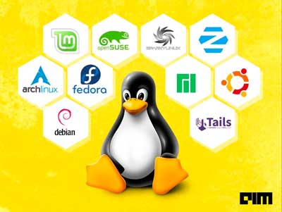

10 Most Stable Linux Distros In 2021
https://analyticsindiamag.com/10-most-stable-linux-distros-in-2021/

Linux is the most popular open-source and programmer-friendly operating system with several advantages over other OS in terms of security, flexibility, and scalability. A Linux distribution (aka distro) is an OS made from softwares based on the Linux kernel. Users download Linux from one of these distros.
Let`s look at the ten most stable Linux Distros in 2021.
(The list is in alphabetical order)
1| ArchLinux
Suitable for: Programmers and Developers
About: Arch Linux is a lightweight and flexible Linux distribution with a simple user environment. The independently developed, x86-64 general-purpose GNU/Linux distribution provides the latest stable versions of most software by following a rolling-release model. The features of this distribution include pragmatic distribution, user centrality, versatility, simplicity, among others.
Know more here.
2| Debian
Suitable for: Beginners
About: Debian is a popular stable and secure Linux based operating system. Various popular Linux distributions, such as Ubuntu, PureOS, SteamOS, etc choose Debian as a base for their software. Notable features are:
Extensive hardware support
Provides smooth upgrades
Security support for releases.
Free and open-source software.
Know more here.
3| Fedora
Suitable for: Software Developers, Students
About: The distribution creates a platform ideal for hardware, containers and the cloud, allowing software developers and the community members to build tailored solutions for their users. Fedora Workstation is a user-friendly operating system that supports a wide range of developers, from students to professionals in corporate environments.
Know more here.
4| Linux Mint
Suitable for: Professionals, Developers, Students
About: Linux Mint is one of the most popular desktop Linux distributions that is both free and open source. Based on Debian and Ubuntu, Mint provides about 30,000 packages and is one of the best software managers. The distro provides full multimedia support and is extremely easy to use.
Know more here.
5| Manjaro
Suitable for: Beginners
About: Manjaro Linux is a fast, desktop-oriented operating system based on Arch Linux. The distro provides all the benefits of cutting-edge software to get started quickly and automated tools to minimise manual intervention. It is completely free and is available for 64 Bit architectures.
Know more here.
6| openSUSE
Suitable for: Beginners and advanced users
About: openSUSE, formerly known as SUSE Linux, is one of the most easy to use Linux distributions. The aim of this distribution is to create usable open-source tools for software developers and system administrators while providing a user-friendly desktop and feature-rich server environment.
Know more here.
7| SparkyLinux
Suitable for: Gamers
See Also
Opinions
Does Recent Databricks’ Massive Investment Signal A Maturing Data Science Industry?
About: SparkyLinux is a GNU/Linux distribution created on top of Debian GNU/Linux operating system. The fast, lightweight and fully customisable operating system offers different versions for different tasks, including a fully featured OS with a lightweight desktop environment and MinimalGUI with Openbox window manager pre-installed with basic software. The features include stable or (semi-)rolling release, special editions: GameOver, Multimedia & Rescue, CLI Edition (no X) for building customised desktop, etc.
Know more here.
8| Tails
Suitable for: Security and privacy
About: Tails is a portable operating system resistant to surveillance and censorship. The OS uses the Tor network to protect privacy online. Also, Tails includes a selection of applications to work on sensitive documents and communicate securely. Features include: resilience against surveillance, advertising and viruses; leaves no trace on the computer when shut down; based on Debian GNU/Linux etc.
Know more here.
9| Ubuntu
Suitable for: Developers, Professionals, Students
About: Ubuntu is a popular, open source desktop operating system with all the essential applications such as an office suite, browsers, email and media apps, etc. For instance, you can create professional documents, spreadsheets and presentations on Ubuntu with LibreOffice.
Know more here.
10| Zorin OS
Suitable for: Beginners, Professionals
About: Zorin OS is a powerful operating system designed to make your computer faster, more secure and easier to use. The operating system supports over 50 languages and comes pre-loaded with assistive technologies. Features include flexibility, accessibility, compatibility, etc.
Know more here.
What Do You Think?